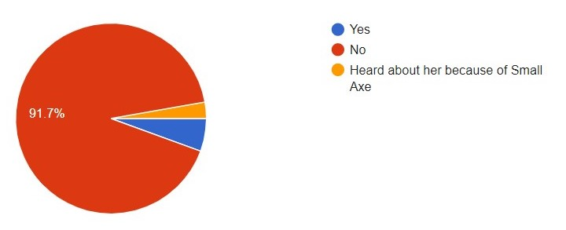
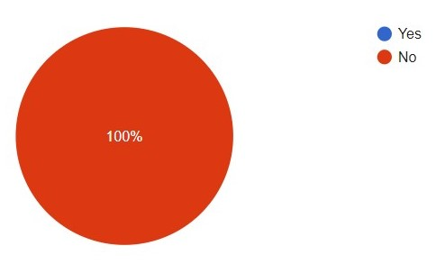

Black Women Organising
This website exists to highlight the long history of Black women's contribution to politics, campaigning and political change in Britain.
We selected this project focus as, through our continued study of history into higher education, and personal extracurricular interests, we are able to reflect that this is a depressingly neglected area of attention in the education system and social consciousness of the majority in the UK. We do not wish to overlook the contribution of all Black people to social and political change in the UK but needed to limit our focus in order to enable us to produce a coherent and accessible project, and give ourselves a manageable workload! We also recognise that there is an intersection in the standards that women and people of colour are held to in the political sphere and the prejudice they face, making the recognition of Black women's contributions even more critical. This is by no means an exhaustive list of brilliant Black women in the British political sphere but we hope we have elevated the story of some overlooked Black women in this project.
We intentionally did not restrict our time frame for a number of reasons. In our research we found that Black women have been contributing to politics and community activism in the UK for centuries, and in awareness of the collective amnesia concerning this that our education system creates, we did not want to be complicit in this and create a reductive picture. The 18th- 21st centuries are a well documented period of British history, in which significant political, social and economic change occured. We therefore want to mirror this historiographical trend and identify how Black women contributed to the breadth of this period.
1700s
Phillis Wheatley (1753-1784)
 Born in West Africa (Senegal or Gambia), Phillis was captured and enslaved when she was seven and purchased by the Wheatleys, a wealthy American family. The Wheatleys taught her to read and write and she soon developed a passion for poetry, being published at the age of just thirteen. By the time she had turned 18 she had amassed a collection of 28 poems and her writing had become popular in both America and Britain.
Born in West Africa (Senegal or Gambia), Phillis was captured and enslaved when she was seven and purchased by the Wheatleys, a wealthy American family. The Wheatleys taught her to read and write and she soon developed a passion for poetry, being published at the age of just thirteen. By the time she had turned 18 she had amassed a collection of 28 poems and her writing had become popular in both America and Britain.
 The Wheatleys moved to London in search of a publisher, and she was welcomed by prominent abolitionists who saw her as crucial to their cause. Wheatley’s poetry was used to undermine the institution of slavery and to humanise Africans. Her art was a driving force for changing public opinions on slavery.
The Wheatleys moved to London in search of a publisher, and she was welcomed by prominent abolitionists who saw her as crucial to their cause. Wheatley’s poetry was used to undermine the institution of slavery and to humanise Africans. Her art was a driving force for changing public opinions on slavery.
Mary Prince (1788-?)
Prince was born into slavery in Bermuda and sold to various brutal slaveowners. Prince was sold for a fourth time to John Adam Woods and worked as a domestic slave in his Antiguan residence. There she joined the Moravian church and learnt to read. In 1826, Prince married without the permission of the Woods, much to their anger. The Woods travelled to England with Prince, separating her from her husband. It was illegal to transport slaves out of England, meaning Prince had some safety. This however meant she could not return to her husband in Antigua (for fear of re-enslavement) unless the Woods granted her emancipation, which they refused.
Prince fought against the Woods and presented a petition to Parliament demanding her freedom, making Prince the first woman ever to submit a petition to Parliament. She began to work alongside abolitionist writer Thomas Pringle and produced her autobiography, ‘The History of Mary Prince’. Her writing marked a crucial advancement in the abolitionist cause and shone light on the abhorrent practise of slavery.
1800s
This period was marked by worldwide sweeping changes. The late 18th and early 19th centuries saw abolitionism rise to success with slavery being abolished in Britain in 1833. The fight against slavery transitioned into activism to protect and further the lives of Black British people. The Black female activists in this period risked their safety in a racist and sexist society to fight for justice and their tireless work is still felt to this day.
Mary Seacole (1805-1881)
 Born in Jamaica Mary Seacole took an interest in medicine and healing from a young age, working in a boarding house for sick and injured soldiers at just 12 years old.
Upon hearing of the dire conditions soldiers in Crimea were facing and the inadequate medical infrastructures in place there, Mary travelled to London and asked the British War Office to send her to Crimea to help. Mary was refused because she was Black. Undeterred, she raised her own funds to travel to Crimea, and established the ‘British Hotel’ to house and care for injured officers.
Born in Jamaica Mary Seacole took an interest in medicine and healing from a young age, working in a boarding house for sick and injured soldiers at just 12 years old.
Upon hearing of the dire conditions soldiers in Crimea were facing and the inadequate medical infrastructures in place there, Mary travelled to London and asked the British War Office to send her to Crimea to help. Mary was refused because she was Black. Undeterred, she raised her own funds to travel to Crimea, and established the ‘British Hotel’ to house and care for injured officers.
While Florence Nightingale’s hospital was hundreds of miles from the front line, Mary’s was far closer to the action. She even tended to the wounded on the frontline while under direct fire. Seacole gained much support and praise but was eventually whitewashed out of history. After almost a century of being lost, activists campaigned tirelessly to bring Seacole into the mainstream. In 2004 she was voted the greatest Black Briton in history and, after a 12-year campaign, a statue to commemorate her was unveiled in 2016 by Baroness Benjamin.
Ellen Craft (1826-1891)
 Ellen Craft was a prominent abolitionist born and enslaved in Macon, Georgia. She escaped slavery by disguising herself as a white male and presented her husband as her personal slave. Although she was successful the Fugitive Slave Act of 1850 pushed the Crafts to leave America and find safety in England.
Ellen turned their Hammersmith home into a hub of Black activism and often housed fellow Black abolitionists. She became a member of many reform and suffrage organisations such as the London Emancipation Committee and the British and Foreign Freedman’s Society.
Ellen Craft was a prominent abolitionist born and enslaved in Macon, Georgia. She escaped slavery by disguising herself as a white male and presented her husband as her personal slave. Although she was successful the Fugitive Slave Act of 1850 pushed the Crafts to leave America and find safety in England.
Ellen turned their Hammersmith home into a hub of Black activism and often housed fellow Black abolitionists. She became a member of many reform and suffrage organisations such as the London Emancipation Committee and the British and Foreign Freedman’s Society.
Alice Kinloch (1852-1915)
Born in South Africa, Kinloch came to Britain in the late 1890s. An avid activist in the fight against colonialism and imperialism in Africa, Kinloch co-founded the African Association. The association worked to educate and mobilise the masses against the institution of colonialism and was trailblazing in giving a voice to the Black British community. The association went on to assemble the first Pan-African conference in 1900. Kinloch has been written out of mainstream British history: no results are shown for her when looking in the Leeds University Library, the British Library, Google Scholar or JSTOR and yet she was a key figure in the Pan-African movement. Her actions and activism were crucial in giving a voice to and elevating the African diaspora. Her strength and perseverance in the face of racism and sexism should never be forgotten.
Amy Ashwood Garvey (1897-1969)
 Garvey was a Jamaican activist known for her support of Pan-Africanism and Black self-determination. As the wife of Marcus Garvey, she co-founded the Universal Negro Improvement Association, assisted in the creation of The Negro World newspaper and heavily shaped the Garveyite movement. In 1924, after divorcing Marcus Garvey, she travelled to London. There she founded the Afro-Women’s Centre and Residential Club in Ladbroke Grove, opened the Afro-Women’s Service Bureau in Egerton Gardens and co-founded the Nigerian Progress Union alongside Oladipo Solanke.
Garvey was a Jamaican activist known for her support of Pan-Africanism and Black self-determination. As the wife of Marcus Garvey, she co-founded the Universal Negro Improvement Association, assisted in the creation of The Negro World newspaper and heavily shaped the Garveyite movement. In 1924, after divorcing Marcus Garvey, she travelled to London. There she founded the Afro-Women’s Centre and Residential Club in Ladbroke Grove, opened the Afro-Women’s Service Bureau in Egerton Gardens and co-founded the Nigerian Progress Union alongside Oladipo Solanke.
Garvey went on to be a key organiser of the fifth Pan-African Congress held in Manchester in 1945 and chaired the first session on freedom from British Colonial rule. While her stay in England was short her contributions to Black British life and history are immense.
1900s
Many Black women born in the early twentieth century went on to become significant activists and organisers from the mid-1900s. These women agitated for racial justice and worked to improve the lives of Black people in Britain, and many also campaigned for non-race related issues.
Kathleen Wrasama (1917-?)
 Wrasama’s exact date of birth and death are unknown. Born in Ethiopia she was taken by church missionaries to England in 1917. In the 1930s she moved to London. Originally working as an extra in Paul Robeson films, Wrasama developed a passion for Black activism. She would go on to co-found the Stepney Coloured Peoples Association. The association worked to improve the lives of people of colour in England through education and housing and worked to advance community relations.
Wrasama’s exact date of birth and death are unknown. Born in Ethiopia she was taken by church missionaries to England in 1917. In the 1930s she moved to London. Originally working as an extra in Paul Robeson films, Wrasama developed a passion for Black activism. She would go on to co-found the Stepney Coloured Peoples Association. The association worked to improve the lives of people of colour in England through education and housing and worked to advance community relations.
While little is known about Wrasama her tireless campaigning for improving the lives of Black people led to the creation of today’s social services. We should all be thankful for her contributions to British society.
Una Marson (1905-1965)
 Una Marson was born in Jamaica, where she worked as a journalist and also a poet. In England, she joined the League of Coloured Peoples and helped to edit their journal, and was a delegate to the twelfth Congress of the International Alliance of Women for Suffrage and Legal Citizenship.
Una Marson was born in Jamaica, where she worked as a journalist and also a poet. In England, she joined the League of Coloured Peoples and helped to edit their journal, and was a delegate to the twelfth Congress of the International Alliance of Women for Suffrage and Legal Citizenship.
In March 1941, she became the first Black woman to be employed full-time by the BBC, serving as Programmes Assistant for Calling the West Indies, which consisted of regular radio broadcasts to the Caribbean. Marson created the weekly feature Caribbean Voices, which provided a key platform for Caribbean intellectuals, academics, creatives, and artists to share their work.
Claudia Jones (1915-1964)
 Claudia Jones was born in Trinidad before moving to New York City with her family. In 1955 she was deported for promoting communism, and came to Britain. Jones soon emerged as a leading figure for the Afro-Caribbean community in London. She was involved in various Black political organisations and protests.
In 1958 she founded the West Indian Gazette, the first major Black newspaper in Britain, which reported on global events and independence movements.
Claudia Jones was born in Trinidad before moving to New York City with her family. In 1955 she was deported for promoting communism, and came to Britain. Jones soon emerged as a leading figure for the Afro-Caribbean community in London. She was involved in various Black political organisations and protests.
In 1958 she founded the West Indian Gazette, the first major Black newspaper in Britain, which reported on global events and independence movements.
Jones organised the first Caribbean carnival in Britain in January 1959 to celebrate Caribbean culture and uplift London’s Black community. This carnival laid the groundwork for establishing a successful carnival in Britain and was undoubtedly important in celebrating Caribbean culture for Black Britons.
Connie Mark MBE (1923-2007)
 Connie Mark was born in Kingston, Jamaica. In 1943, she was recruited to the Auxiliary Territorial Service (ATS) and worked as a medical secretary. In 1949, Mark moved to Britain and began her activism. She campaigned for the recognition of women’s role in the war effort, particularly West Indian women.
Connie Mark was born in Kingston, Jamaica. In 1943, she was recruited to the Auxiliary Territorial Service (ATS) and worked as a medical secretary. In 1949, Mark moved to Britain and began her activism. She campaigned for the recognition of women’s role in the war effort, particularly West Indian women.
Mark founded the Friends of Mary Seacole organisation in 1980. Her campaigning for Seacole led to the establishment of a permanent memorial and a government bursary for nursing studies. In 1992 she was finally awarded a British Empire Medal after having been denied one after the war.
Pearl Connor (1924-2005)
 Pearl Connor was born in Trinidad but moved to London in the 1940s to study law. Connor founded the Afro-Asian Caribbean Agency to help Black artists find work and campaign for their rights. Pearl was Treasurer for the Inter-Racial Friendship Coordinating Council, and in May 1959 was part of a deputation that met with the Home Office to discuss the dangers faced by Black minorities in London and the lack of police protection.
Pearl Connor was born in Trinidad but moved to London in the 1940s to study law. Connor founded the Afro-Asian Caribbean Agency to help Black artists find work and campaign for their rights. Pearl was Treasurer for the Inter-Racial Friendship Coordinating Council, and in May 1959 was part of a deputation that met with the Home Office to discuss the dangers faced by Black minorities in London and the lack of police protection.
Her activism has been neglected in popular memory. Her entry in the Oxford Dictionary of National Biography addresses her cultural achievements, but fails to mention her political organising.
Dame Jocelyn Barrow (1929-2020)
 Dame Jocelyn Barrow was born in Trinidad and moved to Britain to attend university in 1959. Barrow was a founding member of the Campaign Against Racial Discrimination (CARD), an organisation that lobbied for race relations legislation, and successfully campaigned for the 1965 Race Relations Act, which made racial discrimination illegal.
Dame Jocelyn Barrow was born in Trinidad and moved to Britain to attend university in 1959. Barrow was a founding member of the Campaign Against Racial Discrimination (CARD), an organisation that lobbied for race relations legislation, and successfully campaigned for the 1965 Race Relations Act, which made racial discrimination illegal.
From 1981 to 1988, Barrow served as the first Black female governor of the BBC and from 1983 to 1987 was a member of the Parole Board. In these positions she ‘initiated programmes that encouraged young Black and Asian people to fulfil their potential’ (The Guardian). She was a patron of the Black Cultural Archives, and chaired the 2005 Mayor’s Commission on African and Asian Heritage. In 1992, Barrow became the first Black woman to become a Dame.
Gerlin Bean (1941-?)
 Gerlin Bean came to London from Jamaica in 1960. In 1970, she attended the National Women’s Liberation conference in Oxford and was motivated to create a space in women’s liberation for Black women. Bean set up a Black Women’s Action Committee within the Black Unity and Freedom Party.
Gerlin Bean came to London from Jamaica in 1960. In 1970, she attended the National Women’s Liberation conference in Oxford and was motivated to create a space in women’s liberation for Black women. Bean set up a Black Women’s Action Committee within the Black Unity and Freedom Party.
Bean then began working in the Black Liberation Front, and in 1973 she co-founded Brixton Black Women’s Group with Beverley Bryan and others. In 1978, Bean co-founded the Organisation of Women of African and Asian Descent. The organisation’s campaigns were focused on education, employment, the police, and immigration policy, and serving as a place for women to learn collective organising skills.
Althea Jones-Lecointe (1945-)
 Althea Jones-Lecointe was born in Trinidad in 1945, but left for Britain in 1965 to attend university. She worked in the Universal Coloured Peoples Association (UCPA) as a teacher and organiser.
Jones-Lecointe became the leader of the Black Panther Movement in 1970. Under her leadership, the Panthers became more community-oriented, and she placed emphasis on feminism and supporting Black women.
Althea Jones-Lecointe was born in Trinidad in 1945, but left for Britain in 1965 to attend university. She worked in the Universal Coloured Peoples Association (UCPA) as a teacher and organiser.
Jones-Lecointe became the leader of the Black Panther Movement in 1970. Under her leadership, the Panthers became more community-oriented, and she placed emphasis on feminism and supporting Black women.
In August 1970, Jones-Lecointe held a protest outside the Mangrove Restaurant in Notting Hill, speaking out against ‘state neglect, self-help and the rights of British citizens’ (Johnson). After violence broke out, nine Black activists, including Jones-Lecointe, were arrested. During the trial, Jones-Lecointe represented herself, and assisted in exposing racism within the Metropolitan Police force. The trial was a hugely significant moment for Black British history and demonstrated a successful legal battle between Black British people and the judicial system.
Barbara Beese (1946-)
 Barbara Beese is an activist and former Black Panther. She was one of the Mangrove Nine, alongside Althea Jones-Lecointe. She is a member of Race Today and has contributed to Race Today magazine.
Barbara Beese is an activist and former Black Panther. She was one of the Mangrove Nine, alongside Althea Jones-Lecointe. She is a member of Race Today and has contributed to Race Today magazine.
 Women like Beese and Jones-Lecointe have been frequently excluded from the narrative of Black Power in Britain, but this is changing. The 2020 series Small Axe sees Letitia Wright and Rochenda Sandall portray Jones-Lecointe and Beese respectively. Small Axe shows that these women, who seem to have been forgotten in popular memory, are beginning to get the recognition they deserve.
Leila Hassan Howe (1948-)
 Leila Hassan Howe began working at the Institute of Race Relations in 1971 with writer Ambalavaner Sivanandan. She joined the Black Unity and Freedom Party and protested against police brutality and immigration legislation. At the IRR, Hassan Howe and Sivanandan managed to transform the Institution into a more radical organisation.
Leila Hassan Howe began working at the Institute of Race Relations in 1971 with writer Ambalavaner Sivanandan. She joined the Black Unity and Freedom Party and protested against police brutality and immigration legislation. At the IRR, Hassan Howe and Sivanandan managed to transform the Institution into a more radical organisation.
Hassan Howe also taught in the Black supplementary school movement. In January 1981, she led over 20,000 people in a march known as the National Black People’s Day of Action, in response to the New Cross Fire. She believes that “change is made by the young”.
Beverley Bryan (1949-)
 Beverley Bryan is an academic and activist from Jamaica. She was a Black Panther and one of the founders of Brixton Black Women’s Group and the Organisation of Women of Asian and African Descent. With Stella Dadzie and Suzanne Scafe, Bryan co-authored Heart of the Race: Black Women’s Lives in Britain (1985), a study of life for Black women and their achievements in Britain.
Beverley Bryan is an academic and activist from Jamaica. She was a Black Panther and one of the founders of Brixton Black Women’s Group and the Organisation of Women of Asian and African Descent. With Stella Dadzie and Suzanne Scafe, Bryan co-authored Heart of the Race: Black Women’s Lives in Britain (1985), a study of life for Black women and their achievements in Britain.
After moving back to Jamaica in 1992 she taught at the University of the West Indies as Professor of Language Education.
Baroness Doreen Lawrence (1949-)
 Doreen Lawrence moved to London from Jamaica aged 9. In 1993, her eighteen-year-old son Stephen was murdered in a racist attack. Lawrence campaigned against what she felt was a poor police investigation. Her campaign led to an inquiry in 1999, and the resulting MacPherson Report found that the Metropolitan Police was institutionally racist. Lawrence’s work served as a significant step towards acknowledging and addressing the prevalence of racism in British society and institutions.
Doreen Lawrence moved to London from Jamaica aged 9. In 1993, her eighteen-year-old son Stephen was murdered in a racist attack. Lawrence campaigned against what she felt was a poor police investigation. Her campaign led to an inquiry in 1999, and the resulting MacPherson Report found that the Metropolitan Police was institutionally racist. Lawrence’s work served as a significant step towards acknowledging and addressing the prevalence of racism in British society and institutions.
Lawrence has also done further community-based organising. In 2013 she was made a life peer, and since April 2020 has been the Race Relations Advisor for the Labour Party.
Frances Ezzrecco (D.O.B. Unknown)
Frances Ezzrecco has often been neglected in the history of Black British radicalism. After the 1958 Notting Hill white riots, she co-founded the Coloured People’s Progressive Association (CPPA), stating that “our plan is to bind the coloured people together and to make our people speak up for themselves.” Ezzrecco worked with Claudia Jones in heading delegations to the local authorities to protest conditions for Black people in Britan. In 1961, Ezzrecco was a key organiser in the Afro-Asian-Caribbean Conference (AACC). Ezzrecco was clearly a dedicated and proficient political organiser, but she has not been researched as an activist in her own right.
Catherine Ross (1951-)
 Catherine Ross is an educator, voluntary sector specialist and historian. Catherine and her family emigrated from Saint Kitts when she was 7 and settled in Nottingham. Catherine, and her daughter Lynda-Louise, founded Museumand, the first museum in the UK dedicated to celebrating and recognising the valuable contributions made by Caribbean people to the UK in 2015.
Catherine Ross is an educator, voluntary sector specialist and historian. Catherine and her family emigrated from Saint Kitts when she was 7 and settled in Nottingham. Catherine, and her daughter Lynda-Louise, founded Museumand, the first museum in the UK dedicated to celebrating and recognising the valuable contributions made by Caribbean people to the UK in 2015.
 Catherine was also the guest editor of the 2020 Black History Month website and commented, “Black people have always made history and always will- but it’s equally important that Black people take the lead on how that history is discovered, explored, researched, recorded, archived, curated, exhibited and shared.”
Catherine was also the guest editor of the 2020 Black History Month website and commented, “Black people have always made history and always will- but it’s equally important that Black people take the lead on how that history is discovered, explored, researched, recorded, archived, curated, exhibited and shared.”
Merle Amory (D.O.B Unknown)
 Merle Amory was the Leader of Brent Council from May 1986. Merle was a Labour councillor and the first Black woman to lead a local authority in the UK. She was 25. Unfortunately there is practically no information about Merle available online. We are in the process of communicating with the Brent County Council and Heritage Team to uncover more about Merle and her achievements in the political sphere.
Olive Morris (1952- 1979)
 Olive Morris was a community activist, leader in the UK Black Panthers, feminist and squatters rights movements. Olive was a member of the youth wing of the British Black Panther Movement, having joined in 1968, and got involved in campaigning for every and all issues: “she was never too busy to offer support.” Olive helped set up supplementary schools, squats and Black bookshops. In 1974 Olive co-founded the instrumental Brixton Black Women’s Group.
Olive Morris was a community activist, leader in the UK Black Panthers, feminist and squatters rights movements. Olive was a member of the youth wing of the British Black Panther Movement, having joined in 1968, and got involved in campaigning for every and all issues: “she was never too busy to offer support.” Olive helped set up supplementary schools, squats and Black bookshops. In 1974 Olive co-founded the instrumental Brixton Black Women’s Group.
In 1975 Olive moved to Manchester to complete a social science degree and embedded herself in the activism of the local Black community. Olive helped form the Black Women’s Mutual Aid and Manchester Black Womens Cooperation whilst studying, and was a founding member of OWAAD in 1978.
“People like Olive inspire you to resist.”
Diane Abbott (1953-)
 Diane Abbott has been MP for Hackney North and Stoke Newington since 1987. Diane’s election in 1987 saw her become the first Black woman to sit in the House of Commons. Our research shows Diane is the most well known Black British woman in politics, so we will not focus here on her known story including promotion to the role of Shadow Home Secretary under Jeremy Corbyn.
Unfortunately, throughout her public service Dianne has suffered horrifying levels of discrimination and abuse. Amnesty International found that in the 6 weeks before the 2017 General Election, Diane received 45% of all abusive tweets sent to all female MPs, illustrating the prevalence of misogynoir that riddles British public life.
Diane Abbott has been MP for Hackney North and Stoke Newington since 1987. Diane’s election in 1987 saw her become the first Black woman to sit in the House of Commons. Our research shows Diane is the most well known Black British woman in politics, so we will not focus here on her known story including promotion to the role of Shadow Home Secretary under Jeremy Corbyn.
Unfortunately, throughout her public service Dianne has suffered horrifying levels of discrimination and abuse. Amnesty International found that in the 6 weeks before the 2017 General Election, Diane received 45% of all abusive tweets sent to all female MPs, illustrating the prevalence of misogynoir that riddles British public life.
“One of the most upsetting things is when people, meaning well, will say: ‘Oh, but Diane, you’re so strong.’ Nobody is that strong. Nobody can take the sort of abuse that Meghan had to take and that I’ve had to take. And by dismissing it by saying: ‘Oh Black women are strong,’ that’s denying our humanity.”
Baroness Valerie Amos (1954-)
 Valerie Amos became the first Black female peer in 1997. Valerie reached senior positions in the Labour Party, and in 2003 became the first Black woman to serve in the British cabinet. Valerie then became the first Black woman, and third ever woman, to lead the House of Lords in 2003, until 2007.
Valerie Amos became the first Black female peer in 1997. Valerie reached senior positions in the Labour Party, and in 2003 became the first Black woman to serve in the British cabinet. Valerie then became the first Black woman, and third ever woman, to lead the House of Lords in 2003, until 2007.
Valerie has held senior roles at the UN from 2010-15 and became the first Black woman appointed to lead a UK university, when she became Director of SOAS in 2016. In August 2020, Valerie became the first Black person to head any college at Oxford University.
Yvonne Field (1960-)
 Yvonne Field grew up in Deptford, South London, with her Jamaican parents and 9 siblings. Yvonne talks about the experience of being refused a place at Grammar School aged 11 and how this experience committed her to racial justice campaigning. 2014 Yvonne founded, and remains the CEO of, the Ubele Initiative. The Ubele Initiative is committed to addressing the “deep social issues [which] continue to affect our community.”
Yvonne Field grew up in Deptford, South London, with her Jamaican parents and 9 siblings. Yvonne talks about the experience of being refused a place at Grammar School aged 11 and how this experience committed her to racial justice campaigning. 2014 Yvonne founded, and remains the CEO of, the Ubele Initiative. The Ubele Initiative is committed to addressing the “deep social issues [which] continue to affect our community.”
 This is done through regional, local and national programmes, international diaspora networking, policy development and campaigning. In the COVID-19 pandemic Ubele have led research into the disproportionate impact of the crisis on charities specific to meeting the needs of BAME communities.
This is done through regional, local and national programmes, international diaspora networking, policy development and campaigning. In the COVID-19 pandemic Ubele have led research into the disproportionate impact of the crisis on charities specific to meeting the needs of BAME communities.
Yvette Williams MBE (D.O.B Unknown)
 Yvette Williams is a community activist, campaigner, and community and diversity specialist. Yvette was an Equality and Diversity policy advisor at the Crown Prosecution Service in London for 14 years, for which she was awarded an MBE in 2012. Yvette is one of the founders of Operation Black Vote and is now a co-founder, coordinator and spokesperson for the Justice for Grenfell campaign.
Yvette Williams is a community activist, campaigner, and community and diversity specialist. Yvette was an Equality and Diversity policy advisor at the Crown Prosecution Service in London for 14 years, for which she was awarded an MBE in 2012. Yvette is one of the founders of Operation Black Vote and is now a co-founder, coordinator and spokesperson for the Justice for Grenfell campaign.
 Yvette's work on this campaign has had significant community level impact since 2017 and has also contributed to keeping the Grenfell tragedy in the public consciousness and maintaining pressure on the Government and their inadequate response.
Yvette's work on this campaign has had significant community level impact since 2017 and has also contributed to keeping the Grenfell tragedy in the public consciousness and maintaining pressure on the Government and their inadequate response.
Dr Shola Mos-Shogbamimu (D.O.B Unknown)
 Dr Shola Mos- Shogbamimu is a highly qualified New York Attorney and Solicitor in England and Wales and powerful womens and civil rights activist. Shola organises social campaigns, scrutinises government policy and contributes to mainstream political commentary. Dr Shola created She@LawTalks to empower aspiring Black, minority ethnic and female students to become leaders in the legal profession. Dr Shola also founded the Women in Leadership publication to drive positive change for minority groups globally. Dr Shola’s book, This is Why I Resist, illuminates the roots of British structural racism. Watch Dr Shola’s Ted Talk here.
Dr Shola Mos- Shogbamimu is a highly qualified New York Attorney and Solicitor in England and Wales and powerful womens and civil rights activist. Shola organises social campaigns, scrutinises government policy and contributes to mainstream political commentary. Dr Shola created She@LawTalks to empower aspiring Black, minority ethnic and female students to become leaders in the legal profession. Dr Shola also founded the Women in Leadership publication to drive positive change for minority groups globally. Dr Shola’s book, This is Why I Resist, illuminates the roots of British structural racism. Watch Dr Shola’s Ted Talk here.
Dawn Bultler (1969-)
 Dawn Butler is a senior Labour party MP who grew up in East London with her Jamaican parents. Dawn was elected MP for Brent South in 2005 and became only the third Black woman elected to the House of Commons. Since Dawn has been the first elected Black woman to sit in the British Cabinet (Minister of State for Youth Affairs in 2009) and the first Black woman to speak from the dispatch box in December 2009: “the Tories tried to belittle me at that moment in history… they’d all been instructed to put me down.”
Dawn Butler is a senior Labour party MP who grew up in East London with her Jamaican parents. Dawn was elected MP for Brent South in 2005 and became only the third Black woman elected to the House of Commons. Since Dawn has been the first elected Black woman to sit in the British Cabinet (Minister of State for Youth Affairs in 2009) and the first Black woman to speak from the dispatch box in December 2009: “the Tories tried to belittle me at that moment in history… they’d all been instructed to put me down.”
Dawn is a keen supporter of the BLM movement and outspoken on issues of injustice. Dawn has highlighted personal experiences of racial profiling and called for Creddisa Dick to resign from the Met Police, and extensive stop and search powers to be revoked.
Phyll Opoku-Gyimah/ Lady Phyll (1975-)
 Phyll Opoku-Gyimah, who goes by Lady Phyll, is a leading LGBTQ+ activist in the UK. Lady Phyll co-founded UK Black Pride in 2005, which is “Europe’s largest celebration for LGBTQ people of African, Asian, Caribbean, Latin American and Middle Eastern descent.” Lady Phyll remains one of the event’s trustees and executive directors.
Phyll Opoku-Gyimah, who goes by Lady Phyll, is a leading LGBTQ+ activist in the UK. Lady Phyll co-founded UK Black Pride in 2005, which is “Europe’s largest celebration for LGBTQ people of African, Asian, Caribbean, Latin American and Middle Eastern descent.” Lady Phyll remains one of the event’s trustees and executive directors.
Lady Phyll has also been a trustee of Stonewall (the largest LGBTQ+ rights organisation in Europe), an executive director of Kaleidoscope Trust (since 2019), and has sat on the Trade Union Council race relations committee. Lady Phyll rejected an MBE in 2016 due to the “toxic legacy” of the British Empire.
Lavinya Stennett (1996-)
 Lavinya Stennett is the founder and CEO of the Black Curriculum, a social enterprise founded in 2019. The Black Curriculum is led by young people and designs teacher training and Black history programmes targeted at ages 8-16. The Black Curriculum was inspired by the absence of Black British history within even the Black History Month classes during Lavinya’s upbringing in South London; these focused on slavery and US civil rights.
Lavinya Stennett is the founder and CEO of the Black Curriculum, a social enterprise founded in 2019. The Black Curriculum is led by young people and designs teacher training and Black history programmes targeted at ages 8-16. The Black Curriculum was inspired by the absence of Black British history within even the Black History Month classes during Lavinya’s upbringing in South London; these focused on slavery and US civil rights.
 Lavinya designed the Black Curriculum in response to the far more inclusive, international history she was introduced to when studying African studies and Development studies at SOAS.
Lavinya designed the Black Curriculum in response to the far more inclusive, international history she was introduced to when studying African studies and Development studies at SOAS.
Temi Mwale (?1996-)
 Temi Mwale is a social entrepreneur, educator, and community activist.
Temi Mwale is a social entrepreneur, educator, and community activist.
In 2018 she won the Groundwork’s Young Community Leader of the Year award. In 2012 Temi founded the 4Front Project. 4Front is a youth led social enterprise that empowers communities and young people to live free from violence. 4Front provides long term support and empowerment services for people aged 11-25 in prison, schools and communities to achieve this.
Temi also uses her platform to dispel commonly held views about gang crime and hold the state to account on their failure to address the underlying roots of violence.
2000s
In the 21st century there is far greater representation of Black Britons in the political mainstream. However, racism directed at Black people in the political sphere persists and representation in the House of Commons, House of Lords, and the top levels of public bodies is far below what would be proportional to the population of the UK.
Since 1987 there has been an increase in Black and Minority Ethnicity MPs elected in the UK at every election, with 65 elected in 2019. This is 10% of our parliament, which is not proportional to the 14.4% of our electorate that is Black or Minority Ethnic. Further, a 2021 YouGov Survey, ‘Unequal Britain: attitudes to inequalities after COVID-19’ demonstrates that a concerning level of racism remains in our society, and research conducted by ITV in 2020 found that over 50% of Black and Minority Ethnicity MPs had experienced racial discrimination by another sitting member of parliament. There is a long way to go.